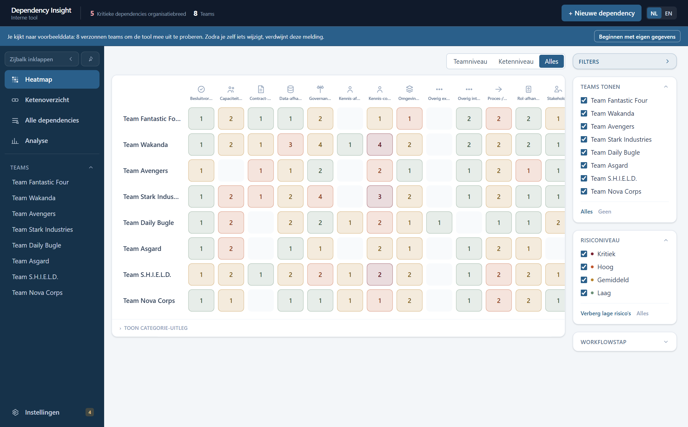

GEBRUIKSHANDLEIDING
Dependency Insight
Overzicht per functionaliteit: dependencies in kaart brengen, teamworkflows visualiseren en de keten tussen teams doorzien.
100% lokaalAlle data blijft in je browser. Niets wordt naar een server verstuurd.
Geen persoonsgegevensAlleen rollen en teamniveau-informatie, nooit namen.
TransparantElke risicoscore is uit te leggen — nooit een black box.
Versie juli 2026 · Nederlands / English
1Basisnavigatie
Elk scherm deelt dezelfde koptekst — dit is het startpunt voor alle functionaliteit.

- Zijbalk — de weergaven bovenaan, daaronder de teamlijst waarmee je naar een teampagina navigeert. Met de twee knoppen erboven klap je de zijbalk in tot iconen of laat je hem automatisch wegschuiven.
- Teamniveau / Ketenniveau / Alles — beperk de weergave tot interne (team) of externe (keten) dependencies, of toon ze allebei.
- + Nieuwe dependency — open het formulier om een dependency toe te voegen.
- NL / EN — wissel de taal van de hele applicatie.
- Elke pagina heeft een eigen adres (
/heatmap, /ketenoverzicht, /analyse, /team/…): verversen, terug/vooruit in de browser en het delen van een link komen op dezelfde pagina uit.
- Instellingen & privacy (onderaan de zijbalk) — export/import, mockdata, alles wissen (hoofdstuk 10).
- Drie weergaven: Heatmap, Ketenoverzicht en Analyse (hoofdstuk 11) — elk hoofdstuk hieronder behandelt er één.
2Heatmap
Het startscherm: teams tegen categorieën, in één beeld. Handig om te zien waar risico zich ophoopt.
- Elke rij is een team, elke kolom een categorie. Het getal in een cel is het aantal open dependencies; de kleur is het hoogste risico daarbinnen. Een lege cel betekent: geen dependencies in die combinatie — geen foutstatus.
- Beweeg over een cel voor de verdeling over de risiconiveaus; de rest van de tabel dimt zodat de cel eruit springt. Hetzelfde geldt voor een hele rij of kolom via de kop.
- Klik op een cel, een teamnaam of een kolomkop voor de bijbehorende dependencies in een tabel eronder. Klik daarin een regel aan voor het volledige detailpaneel (hoofdstuk 4), of op een teamnaam om naar die teampagina te gaan. Escape of "Wis selectie" sluit de tabel weer.
- Filter rechts op team, risiconiveau en workflowstap, en bovenaan op team- of ketenniveau. Gearchiveerde teams staan standaard uit maar blijven aan te vinken.
- Geaccepteerde (bewust afgehandelde) dependencies tellen hier niet mee — die blijven wel staan op de teampagina.
- Toon categorie-uitleg onderaan klapt de lijst met categorie-iconen open.
3Ketenoverzicht
Toont hoe teams elkaars werk als input/output doorgeven — de "keten" achter de dependencies.

- Bij het openen kies je een focusteam uit de teamtegels (het team staat daarna in het adres,
/ketenoverzicht/…). Bovenaan het canvas wissel je van focusteam; met Diepte (1–3) begrens je hoeveel ketenstappen er vanaf dat team in beeld komen en met Terugkoppelingen verberg je koppelingen terug naar een eerder team. Rechtsboven zit de Legenda met alle lijnsoorten; de zoomknoppen staan linksonder. Het canvas vult de hele vensterhoogte.
- In rust toont alleen het focusteam al zijn input- en outputblokjes; de andere teams zijn ingeklapt tot titel, tellers en hoogste risico. Elke kolom is één stap verder in de keten. De indeling wordt volledig berekend (kaarten zijn niet versleepbaar) en lijnen lopen om de kaarten heen, nooit erdoorheen.
- Gekleurde lijnen zijn koppelingen op itemniveau en lopen door tot op het input-/outputblokje zelf; een grijze lijn met teller bundelt alle koppelingen tussen twee ingeklapte teams (een amber punt op de teller = minstens één verzoek wacht nog op akkoord). Klik op een kaart om die uit te klappen — de buren tonen dan alleen de items die eraan hangen — of op een lijn om de onderliggende koppelingen te zien. De focus verleggen doe je via Focus op dit team in het detailvak.
- Klik op één input- of outputblokje om zijn stroom door de keten te zien: waar het naartoe gaat, door de ontvangende teams heen, tot zover de dieptemeter reikt (plus waar het zelf rechtstreeks vandaan komt). De rest van de tekening dimt. Hetzelfde werkt voor een externe partij.
- Externe partijen (systemen, leveranciers, CAB, …) staan standaard als eigen kaartje naast de teams die ze raken, met een lijn naar elk item dat ze noemt. In het filterpaneel zet je ze per groep uit (partijen van het focusteam / van de andere teams) — ze zakken dan in een stapel-tab onder de kaart, vanwaar je er nog altijd één kunt kiezen — en vink je losse partijen weg die zo algemeen zijn dat ze het beeld alleen maar vullen.
- Een lijn tussen een output- en inputblokje is een expliciete koppeling, gelegd op de teampagina (hoofdstuk 7) — nooit automatisch geraden.
- Losse (nog niet gekoppelde) blokjes zijn normaal — geen foutstatus.
- Filters rechts: Teams tonen en Externe partijen (geen risicofilter: dependencies zijn hier geen invoer). De partijenbediening staat ook als knop Partijen op het canvas — twee ingangen voor dezelfde instelling, met een zoekveld en per partij een alleen-knop.
4Een dependency toevoegen of bewerken
Hetzelfde formulier voor aanmaken en bewerken, bereikbaar via "+ Nieuwe dependency" of vanuit een detailpaneel.

| Veld | Toelichting |
|---|
| Team, Scope, Categorie, Titel, Rol/betrokkene | Verplicht. De categorielijst is vast en hangt af van de scope: acht interne categorieën, twaalf externe. Eigen categorieën toevoegen kan niet. |
| Impact / Frequentie / Status | Verplicht — bepalen samen de risicoscore (zie detailpaneel). |
| Waar in de workflow, Van wie/wat, Effect op de flow, Zelf oplosbaar | Optioneel. Vullen deze in? Dan verschijnt de dependency automatisch op de teampagina bij de juiste workflow-fase. |
| Toelichting / Mitigatie | Optionele vrije tekst. |
Detailpaneel: elke dependency toont zijn risicoberekening in gewone taal (impact × frequentie + statuscorrectie) — nooit een black box.

5Team-navigatie
Via het hamburgermenu (☰) bereik je de teampagina van elk team.

- Klik een teamnaam om naar de bijbehorende teampagina te gaan.
- + Team onderaan voegt een nieuw, leeg team toe.
- Wisselen tussen teams ververst de teampagina volledig — geen restjes van het vorige team.
6Teampagina — workflow
Een vaste, kleurgecodeerde fasereeks (analyse/refinement t/m beheer/nazorg) met een sleepbaar Miro-achtig canvas.

- Input komt binnen links, stroomt door de fases, en verlaat het team rechts als output.
- Capaciteit (hoofdstuk 8) en dependencies met een ingevulde workflow-fase verschijnen automatisch als badges onder de betreffende fase.
- Bovenaan: de aantekeningen-toolbar (hoofdstuk 9).
- Wis teampagina (rechtsboven) reset de hele workflow van dit team — dependencies blijven bestaan.
7Teampagina — applicaties en input/output
Drie lijsten die precies vastleggen wat het team beheert en hoe werk in- en uitstroomt.

- Applicaties in beheer/ontwikkeling — welke systemen dit team draaiende houdt.
- Input — hoe werk binnenkomt; optioneel een bron (team/rol/persoon/systeem/omgeving/stakeholder), die het blokje op het canvas kleurt.
- Output — wat het team oplevert.
- Een input kan expliciet gekoppeld worden aan de output van een ander team — dit vult automatisch het ketenoverzicht (hoofdstuk 3).
- Met Split per applicatie aan staat een input-/outputitem dat aan een applicatie gekoppeld is op de hoogte van de eigen lane van die applicatie, i.p.v. gecentreerd over de hele Applicatieflow-zone — de lijn ernaartoe loopt zo nooit meer over een andere lane of chip heen. Koppelingen tussen applicaties (uit de Applicatieflow-vragenlijst) lopen als een 'bus' door de lege gang links van de lanes, om diezelfde reden.
8Teampagina — capaciteit
Wie zit er in het team, en wat gebeurt er als deze persoon wegvalt?

- Rol — kies uit gebruikelijke agile-rollen, of voeg een eigen rol toe (blijft daarna overal beschikbaar).
- Senioriteit — junior / medior / senior.
- Fase (optioneel) — koppelt de rol aan een workflow-fase, zichtbaar als badge op het canvas.
- Risico bij wegvallen — ja/nee, met een toelichtingsveld voor de reden (bijv. enige kennishouder van een systeem).
- Onderaan dezelfde pagina: de dependencies van dit team, met risicoscore — klik voor het detailpaneel.
9Teampagina — aantekeningen (Miro-achtig)
Vrije aantekeningen bovenop de vaste workflow, voor context die niet in een veld past.

- + Notitie — een gekleurd tekstvak, direct te bewerken.
- + Rechthoek / + Cirkel / + Ruit — vormen met korte labeltekst.
- 🖇 Lijn — activeer, klik daarna twee elementen om ze te verbinden.
- Kleurkeuze per element — dezelfde kleuren als de "bron"-codering bij input-items (hoofdstuk 7), zodat aantekeningen en input dezelfde beeldtaal spreken.
- Verwijderen via het ✕-knopje dat verschijnt bij het aanwijzen van een element.
10Instellingen & privacy
Bereikbaar via "Instellingen & privacy" onderaan de zijbalk.

- Alle data blijft lokaal in de browser — er wordt niets naar een server verstuurd.
- Exporteer als PNG — slaat de huidige weergave op als afbeelding, handig voor presentaties.
- Exporteer/importeer als JSON — volledige back-up of overdracht naar een collega.
- Terug naar mockdata — herstelt de fictieve demo-data (alleen zichtbaar bij eigen data).
- Wis alle data — verwijdert alles definitief, met bevestigingsstap.
11Analyse
Eén pagina die alles uit de data haalt wat erin zit: metrieken, trends, constateringen en hygiënecontroles. Bewust zo volledig mogelijk — schrap wat je niet gebruikt.
- Filters bovenaan: een team (alles wordt dan tot dat team teruggebracht, inclusief keten en applicaties) en de periode van de trendgrafieken (13, 26 of 52 weken). De filters gelden voor alle tabbladen tegelijk.
- Zes tabbladen daaronder: Overzicht, Signalen, Trends, Risico, Keten en proces, en Data en beheer. Elk tabblad bevat twee of drie van de onderdelen hieronder, met dezelfde kop erboven. Alleen het geopende tabblad wordt getoond — ook bij een PNG-export.
- Overzicht — kerncijfers met het verschil ten opzichte van 30 dagen geleden: open, kritiek, blokkerend, gemiddelde score, verouderd, zonder actie-afspraak, gesloten, nieuw, dagen tot mitigatie en open koppelingsverzoeken.
- Rapport — dezelfde cijfers als lopende tekst: samenvatting, ontwikkeling, risico, teams, keten, applicaties, datakwaliteit en aanbevelingen. Volgt het teamfilter. "Kopieer rapport" zet de tekst op het klembord; "Download" bewaart hem als markdown-bestand met het team en de datum in de bestandsnaam, klaar om in een wiki of document te plakken.
- Waarschuwingen — één zin per geval (dependency, verzoek, applicatie, team of partij), gesorteerd op ernst; klik opent het detail of de teampagina.
- Constateringen — regels die afgaan op de data (harde deadline zonder afspraak, lang blokkerend, stille risico's, hub-partijen, oude verzoeken, kennisconcentratie, mitigaties die geen stand hielden, groeiende voorraad, wederzijdse afhankelijkheid …), met ernst hoog/midden/laag en een samenvattende zin (verdeling over teams, hoogste risico, oudste). Klik een regel open voor de records.
- Trends — per week teruggerekend uit de wijzigingshistorie: open per status, per risiconiveau, nieuw tegenover gesloten, de som van alle scores, verslechterd en verbeterd in 30 dagen, een lineaire projectie en de statusovergangen.
- Risico en urgentie — kwadranten (quick win / opschalen / opruimen / accepteren), stille risico's, deadlines, gemitigeerd-maar-hoog, acuut en chronisch, dekking van actie-afspraken, top 15.
- Verdelingen, hubs en keten — per niveau/status/scope/categorie/effect, hotspots team × categorie, externe partijen als hub, wie blokkeert wie, kennisconcentratie, teamscorekaart met gemiddelde, concentratie (top 3), koppelingen per team, cycli, losse items, verzoeken, kaart tegenover praktijk, ketenrisico stroomop- en -afwaarts, wederzijdse afhankelijkheden, kaartvolledigheid, applicaties als single point of failure en gedeelde applicaties.
- Proces, flowverlies, doorlooptijden — belasting per werkstap tegenover capaciteit, flowverlies per team/categorie/partij, dagen tot mitigatie en sluiting, langst blokkerend, escalatiegeschiedenis.
- Datakwaliteit en beheer — hygiënecontroles op dependencies, input/output en applicaties; registratie per week en per team; de review-wachtrij; laatste activiteit per team en dubbele registraties.
- Elke kaart heeft een regel uitleg: welke velden en welke formule. Klik op een dependency om het detail te openen, op een team om naar de teampagina te gaan.
- De pagina kan in Instellingen → Admin → Pagina's uitgezet worden, net als de andere weergaven.